Your switchboard can't tell solar from grid.
Behind a backup gateway, it all arrives as one supply. Corrente works out which circuits ran on solar and battery, and prices the rest at your plan's rates.
- It measures. Every circuit, live, from your Basis switchboard.
- It allocates. Solar and battery go to each circuit in proportion to what it drew.
- It prices. Grid power at your plan's peak, shoulder, and off-peak rates.
- It counts. Export credits, plus the amortised cost of your solar and battery.
Everything in one app.
Home
Watch power flow between solar, battery, grid, and home, live. Your switchboard summary, battery level, and grid status sit just below.
Energy History
See where every kilowatt-hour came from. View solar, home use, battery, and grid by hour, day, or month.
Energy Costs
See what you paid, and what your solar saved. Costs split into peak, shoulder, and off-peak, with your bill next to the full cost.
Savings & Solar ROI
Watch your system pay itself back. Track what your solar and battery save compared with buying from the grid.
Live Switchboard
Every circuit's power, voltage, current, and share of the load, live. Rename a circuit once and the name follows it through the app.
Per-Circuit Detail
Find the circuit behind the bill. See which circuits use the most and what each one costs, plus breaker, RCD, arc-fault, and temperature status in plain language.
Automations
Let your home react on its own. Start from a template and build rules on time, battery level, or free-power periods. Rules can set your battery reserve and mode, or turn circuits off and back on.
Feedback & Notifications
Vote on what we build next, and get notified about the things you care about.
See it in action
Real screens from the app, with real data.
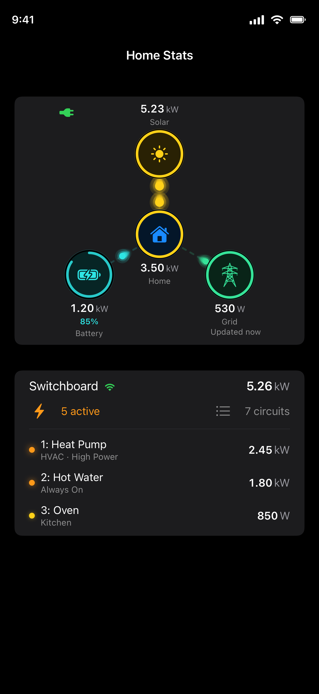
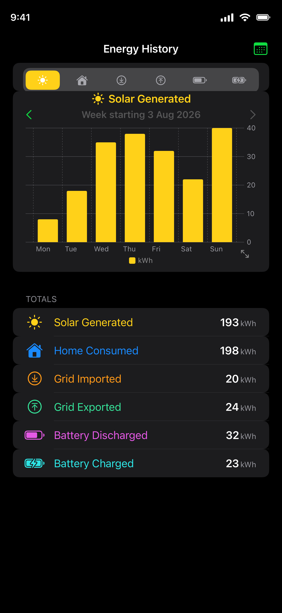
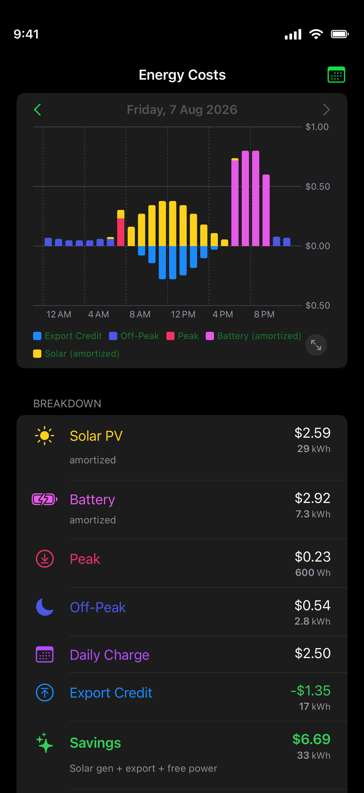
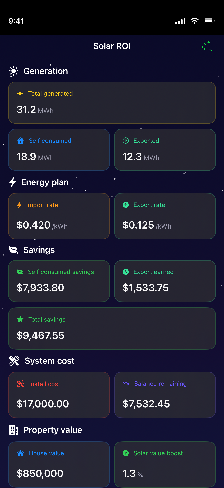
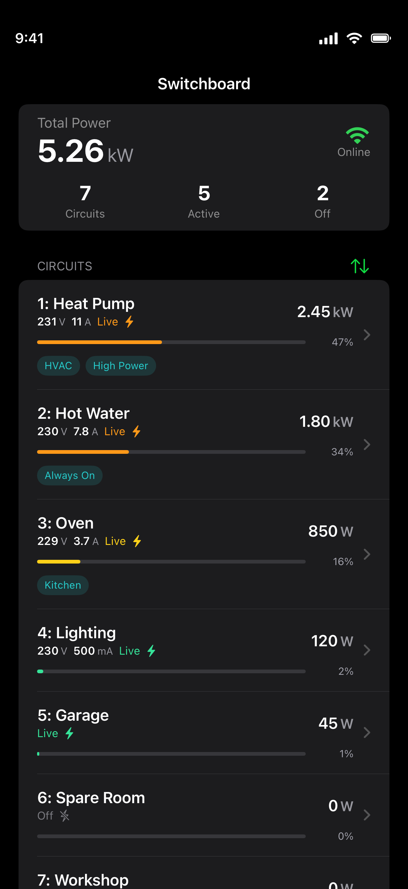
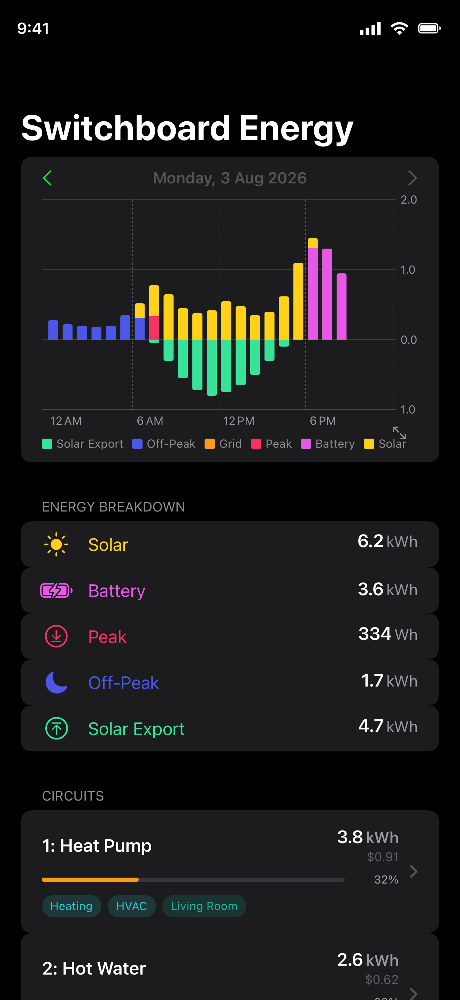
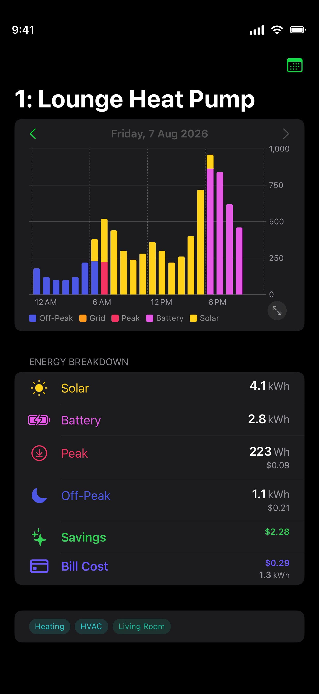
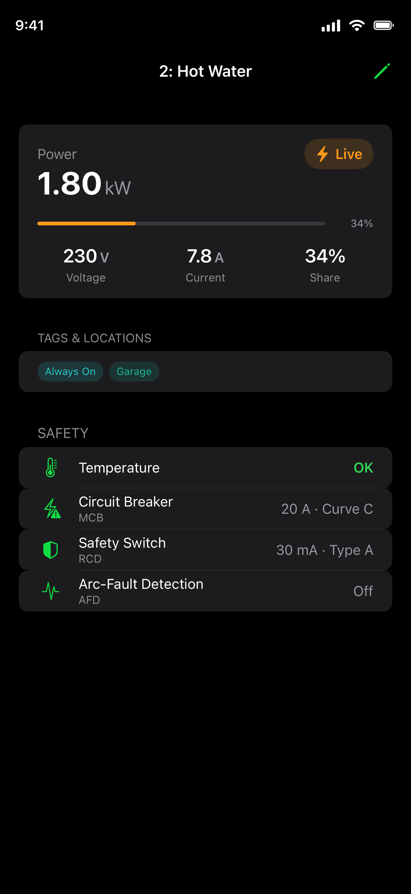
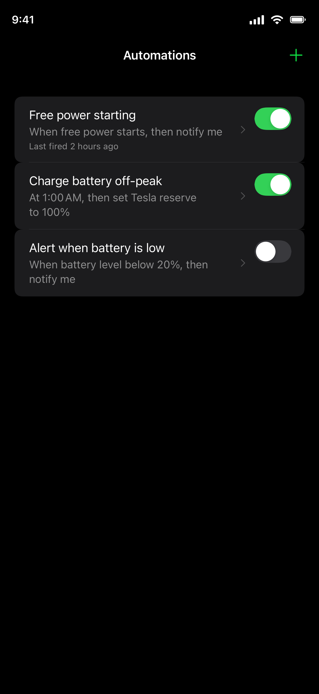
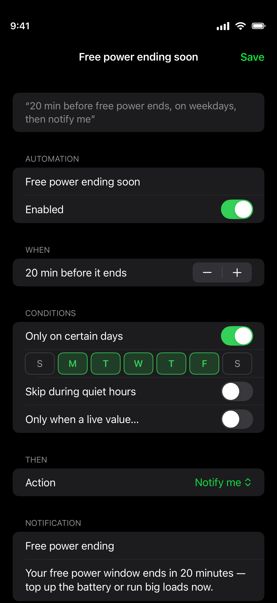
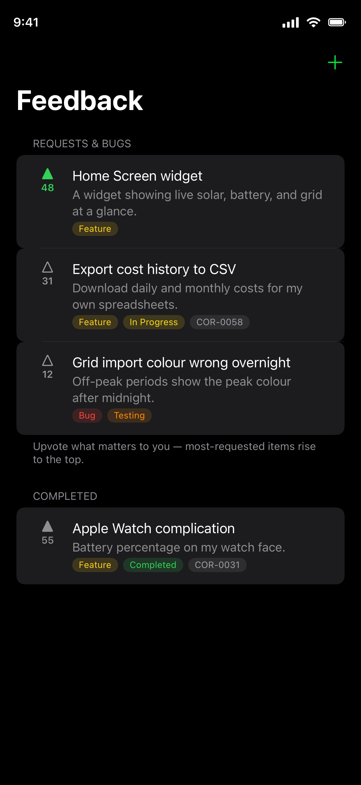
Works with what you have.
Tesla Powerwall and Basis today. More are coming.
Tesla Powerwall
Live status, energy history, battery state of charge, and Storm Mode.
Basis Switchboard
Live circuit power, switchboard and subcircuit history, and your Basis retail plan.
Sigenergy is next.
We've started adding Sigenergy: live power, battery level, and the same per-circuit cost allocation as the rest of the app.
Have a Sigenergy system? Help shape how it works. Testing on real installations is what makes an integration worth having.
Your data stays yours
Corrente only reads data from the systems you connect, using each service's own sign-in. Your energy data is linked only to your Corrente account. It is never sold or used for advertising.
Try it free.
Corrente is free while it's in TestFlight beta. Try it, and tell us what you think.